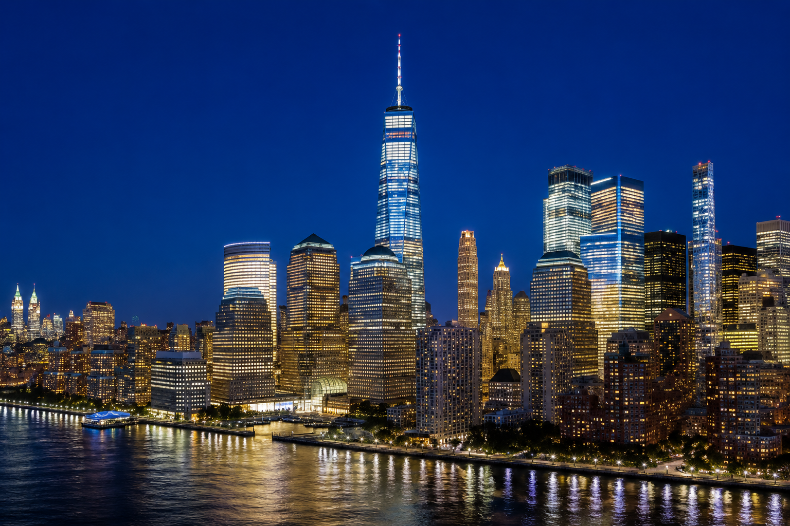
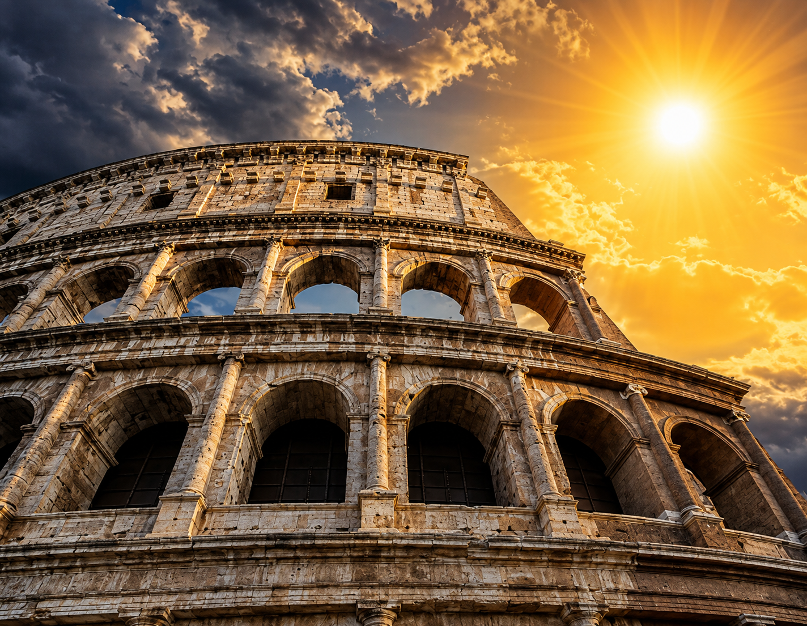
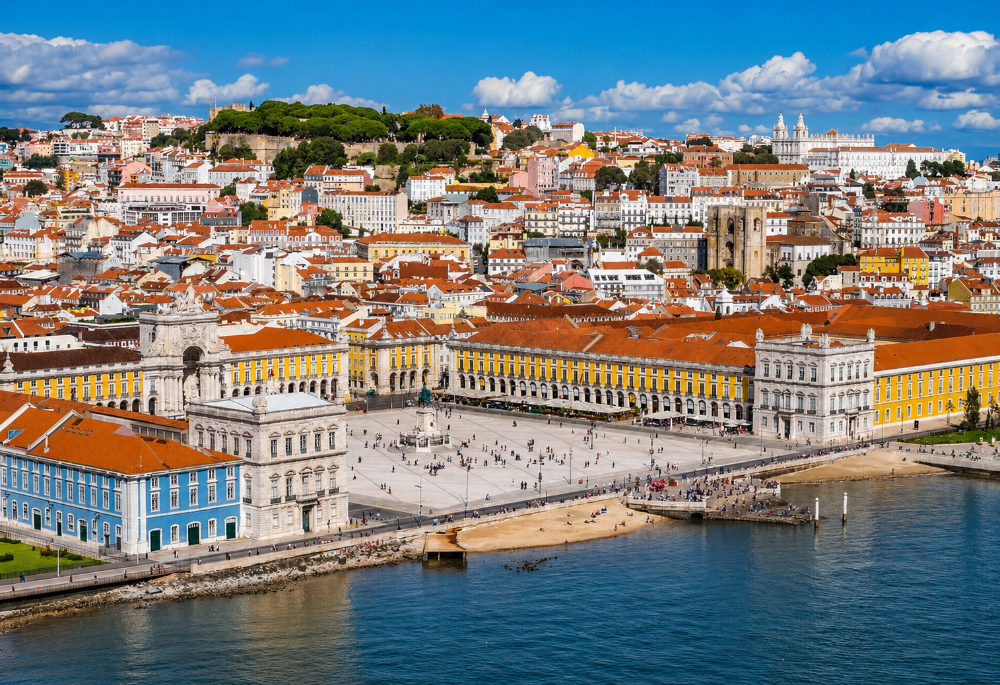

1 - Nova York, EUA

Nova York é pura adrenalina. A "cidade que nunca dorme" tem uma energia que te puxa para as ruas, seja para ver os neons da Times Square ou para sentir a paz no meio do Central Park. É um lugar onde cada esquina parece cenário de filme e onde o mundo inteiro se encontra em uma única ilha.
- O que visitar: Estátua da Liberdade e Top of the Rock.
Saiba mais em História de Nova York.
2 - Roma, Itália

Roma é como um museu a céu aberto que você pode tocar. Caminhar por lá é tropeçar na história a cada passo, entre ruínas de impérios e pratos de massa que aquecem a alma. A "Cidade Eterna" ensina a gente a apreciar o tempo e a beleza das coisas que duram para sempre.
- O que visitar: Coliseu e Fontana di Trevi.
Saiba mais em História de Roma.
3 - Lisboa, Portugal

Lisboa tem uma luz que não se explica. Com suas ladeiras coloridas, o som do Fado ecoando pelas janelas e o cheiro de pastéis de nata fresquinhos, a cidade conquista pelo acolhimento. É um lugar que mistura a nostalgia dos descobrimentos com uma vibe moderna e solar que te faz querer ficar.
- O que visitar: Torre de Belém e Bairro de Alfama.
Saiba mais em História de Lisboa.